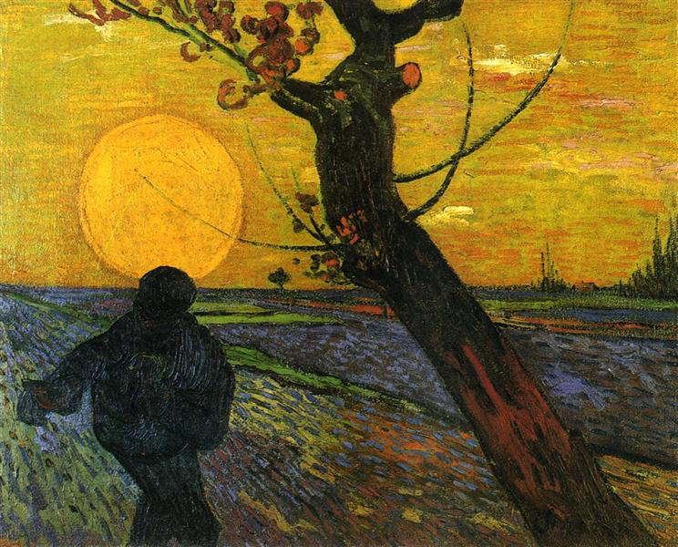

22 February 2025
holding the sun’s hands (the art of becoming)

dear you,
the sun pulls the pen from my pocket and encourages me to write something, anything, down. things have changed since last we spoke; i live in a newer, bigger place, i’ll never return to my childhood home, i’m softer than i was before. friendships have changed, as they do, yet i still yearn for the years past and my girls’ open hearts. the sun comes and goes, leaving behind trails of memories i lap up with my tongue. laughter pressed gently against my ribs, the warmth of love evident on my cheeks. she finds me when i need her most, in the late afternoon, reminding me of the beauty of change.
i’m constantly unearthing parts of myself, reminded of when joy was simple. i’m learning to make peace with the way things shift, the way people drift, the way i, too, am always in motion. life, i think, is about these shifts, an unending perpetual movement of people, thoughts, dreams. i have to remind myself that there is no need to hurry when every change is a quiet hymn to the never ending, tender unfolding of who i am and who i am going to be. the sun is always going to show her face again, stretch her golden fingers across my face – that i know for sure. she is a constant i know i can rely on, a shoulder to lean on while the world rearranges itself.
i cherish the simplicity of discovery, awaiting my next dance with the sun. in her lingering glow, i embrace the art of becoming.
love, kate
(artwork: sower with setting sun, 1888 by vincent van gogh)